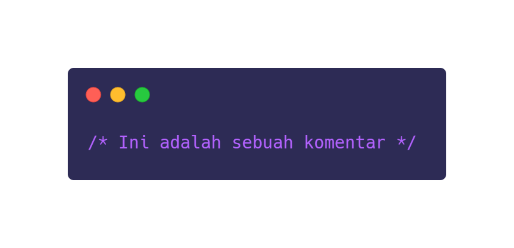

Cascading Style Sheets, or CSS for short, is a programming language for
determining how documents are presented. CSS functions to explain and organize the appearance of
elements written in markup languages, one of which is HTML. In another sense, it is CSS that explains
how HTML elements behind the scenes are displayed in such a way on your website's screen later. Both
HTML and CSS, both complement each other.
So, as developers, we are required to be consistent and thorough. Misunderstanding or miscoding just a
little bit can be fatal. Moreover, in CSS later we will find various elements and terms that are quite
diverse. Therefore, before going too far, let's get acquainted with CSS terms and their uses below!
So, as developers, we are required to be consistent and thorough. Misunderstanding or miscoding just a
little bit can be fatal. Moreover, in CSS later we will find various elements and terms that are quite
diverse. Therefore, before going too far, let's get acquainted with CSS terms and their uses below!
CSS terms and their functions
In the CSS programming language there are also several terms in it that you must understand. Like:
1. Comment
Comments are used to explain code. Even though comments won't appear on the screen later, they
can help you edit and document code. Therefore, you can add comments anywhere and as needed.
Comments themselves are inside the style element, and are usually slashes / and stars *, as you
can see in the following image.

2. Declaration
Kota Bandung dialiri dua sungai utama, yaitu Sungai Cikapundung dan Sungai Citarum beserta
anak-anak
sungainya
yang
pada umumnya mengalir ke arah selatan dan bertemu di Sungai Citarum. Dengan kondisi yang
demikian,
Bandung
selatan
sangat rentan terhadap masalah banjir terutama pada musim hujan.
Wisata
Sejak dibukanya Jalan Tol Cipularang, kota Bandung telah menjadi tujuan utama dalam menikmati
liburan
akhir
pekan
terutama dari masyarakat yang berasal dari Jakarta sekitarnya. Selain menjadi kota wisata
belanja,
kota
Bandung
juga
dikenal dengan sejumlah besar bangunan lama berarsitektur peninggalan Belanda.
House Lembang
Berada di jalur utama Bandung-Lembang, Farm House menjadi objek wisata yang tidak pernah sepi
pengunjung.
Selain
karena letaknya strategis, kawasan ini juga menghadirkan nuansa wisata khas Eropa. Semua itu
diterapkan
dalam
bentuk
spot swafoto Instagramable.
Observatorium Bosscha
Memiliki beberapa teleskop, antara lain, Refraktor Ganda Zeiss, Schmidt Bimasakti, Refraktor
Bamberg,
Cassegrain
GOTO, dan Teleskop Surya. Refraktor Ganda Zeiss adalah jenis teleskop terbesar untuk meneropong
bintang.
Benda
ini
diletakkan pada atap kubah sehingga saat teropong digunakan, atap tersebut harus dibuka.
Observatorium
Bosscha
boleh
dikunjungi oleh siapa pun, tanpa tiket. Namun, bagi yang ingin menggunakan teleskop Zeiss, wajib
mendaftarkan
diri.
Untuk instansi atau lembaga pendidikan, diberikan jadwal hari Selasa sampai Jumat. Sementara
itu,
kunjungan
individu
dibuka setiap hari Sabtu.